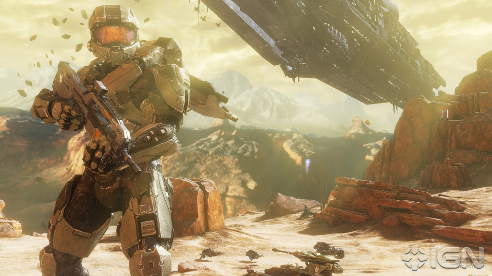
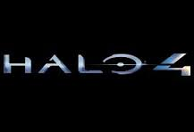

Halo 4 Enlightenment


In the halo series there has been many fights between which one is better,
but i would have to say that this one is by far takes the bite. It has greatly boosted the name of halo,
especially in online multiplayer gaming. Its an awesome first-person shooter game about a man
who is considered a walking one-man army tank. He is someone who he would choose to be a lone wolf.
His name is John, but he is mostly referred to as Master Chief and his nukber is Sierra 117 Spartan.
He only fights to go up against the Covanent, but as well a new evil lurks in space as he is drifting as we last left off in halo 3.
After he has destroyed one of the Arks that remained he was left to drift in space for over 40 years when the portal to earth closed due to the
explosion of the Ark. In 40 years after the incident Cortana (His personal Female A.I.)wakes Master Chief up from a cryo-sleeping
state to say a Covanent fleet is searching the half destroyed ship. Yet that isn't the most surprising part, what is is that an unidentified
planet that was not noticed with an impenetreble steel shield. The multiplayer component of a game, however, is more tied to a moment in time than the campaign is due to its dependence on player population.
A recently released game generally has more players regularly online representing a broader spectrum of skills, which leads to a more welcoming environment where people feel like they are finding fair matches.
Years after a game's release, the population is whittled down significantly, and any newcomer is likely to feel the sting of the sharpened warriors who still remain.
Furthermore, as time passes, players tend to gravitate towards a few preferred game modes, meaning that less popular options will end up essentially unplayable.